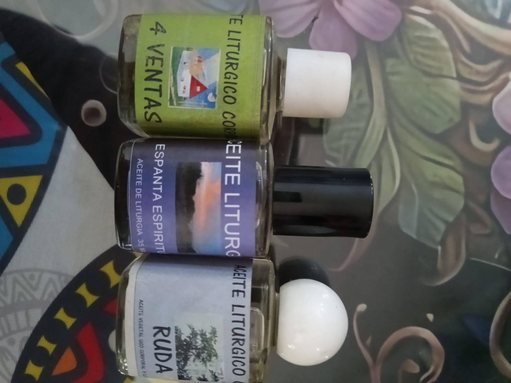

Descripción
Las esencias espirituales se utilizan para ritualizar las velas para uso personal. Hay tres tipos, de salud, de sensualidad y de uso de proteccion propio.
Si le interesa, no dude en llamar o escribirnos para más información sobre este producto o para realizar su pedido.